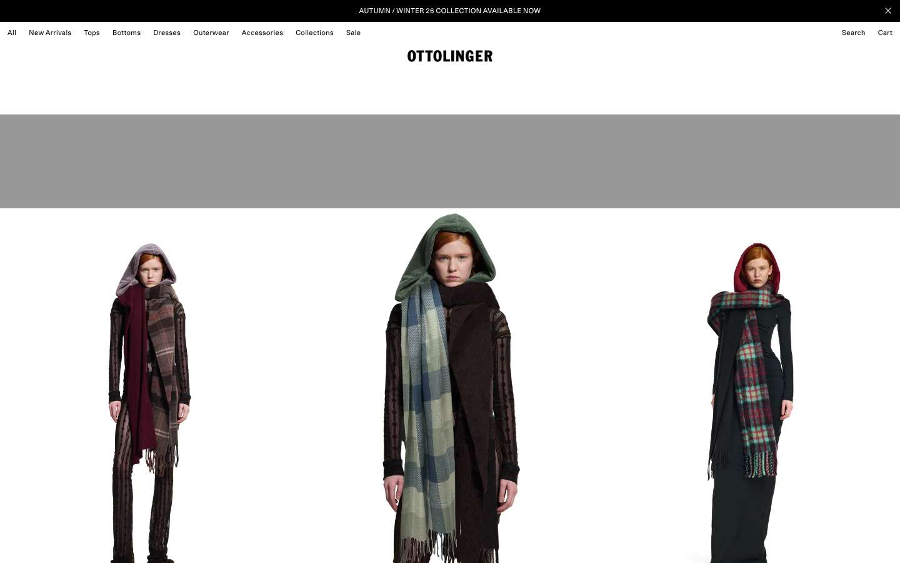
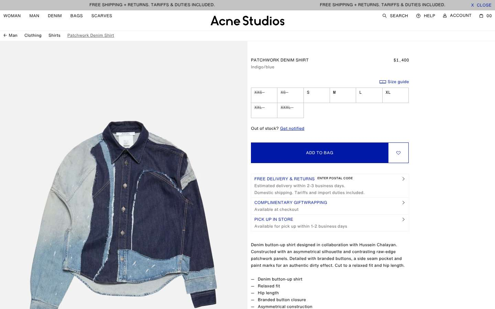
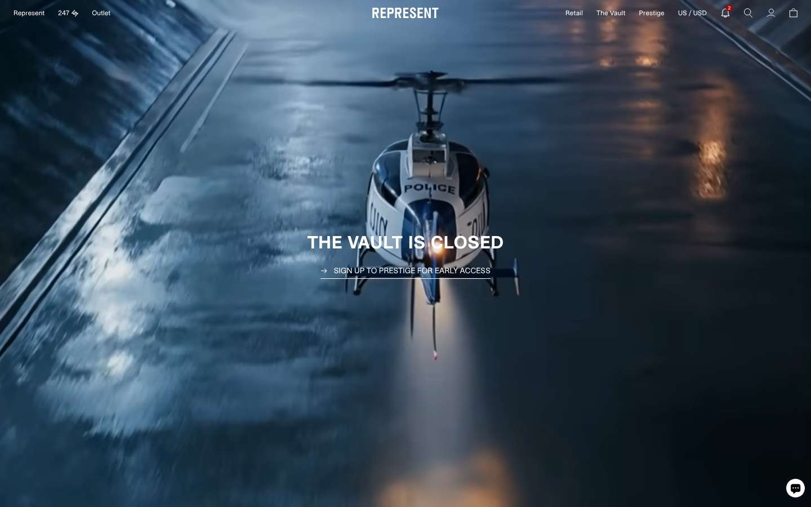
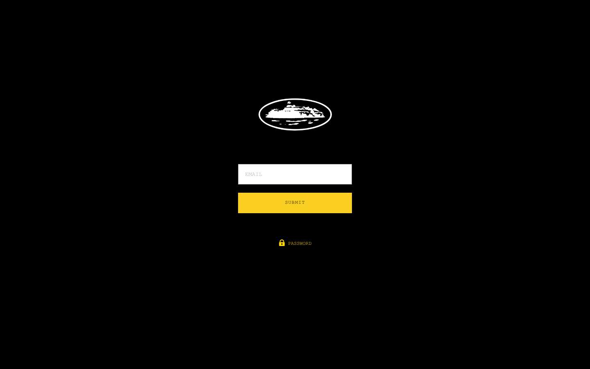
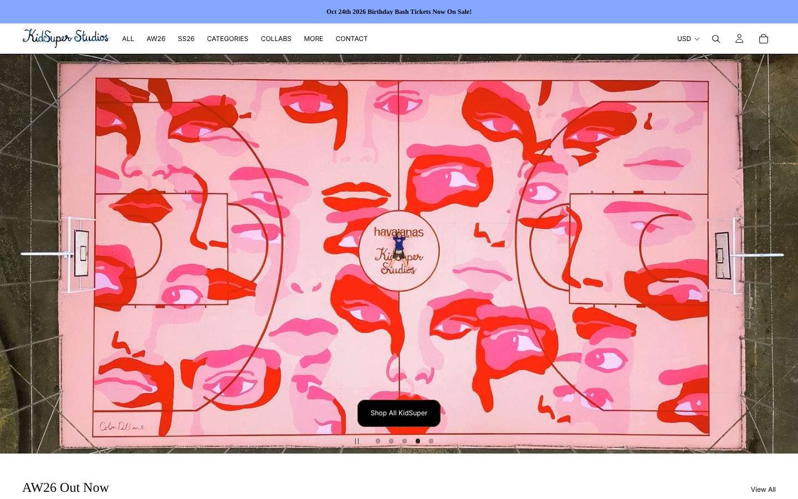
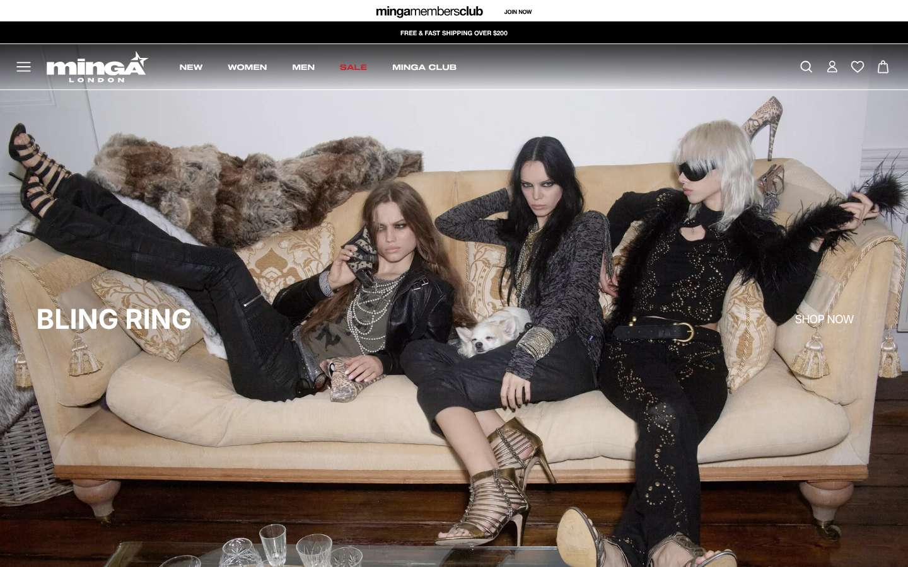
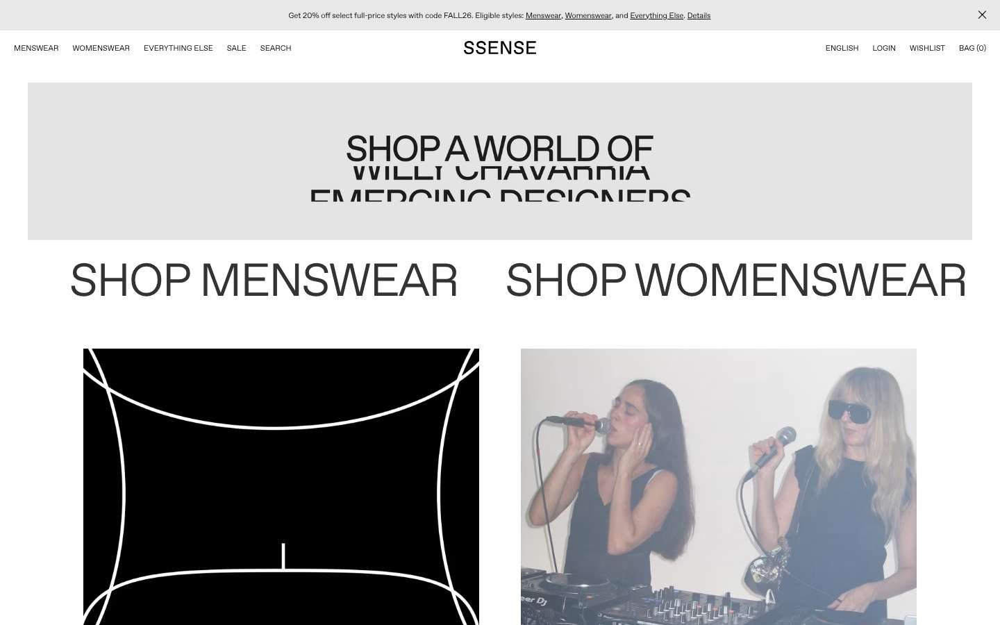
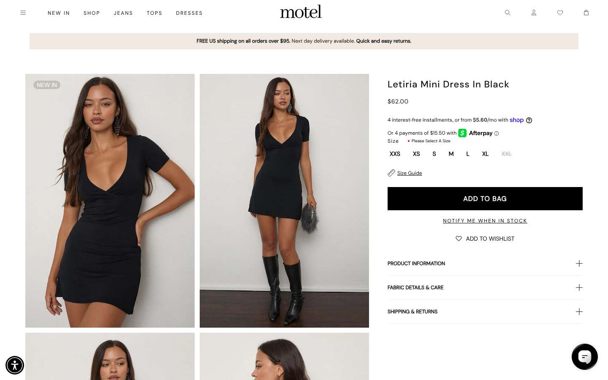
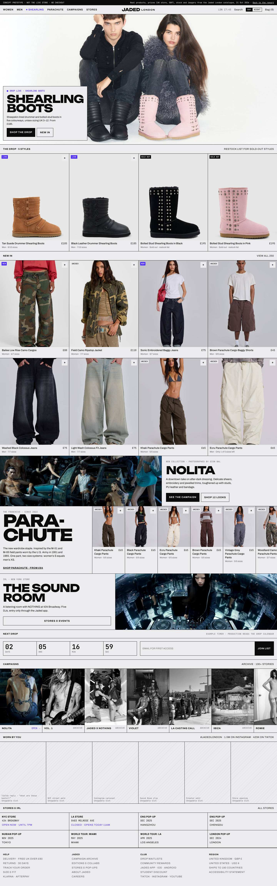

Jaded London, rebuilt around the drop.
Jaded already has art direction. It's in the campaigns: flash-lit club nights, sleaze-glam, the Parachute army. The website flattens it into a generic Shopify catalogue with 2,058 products, 532 collections and 390 pages that nobody has pruned. The rebuild keeps every product, price, campaign and store, cuts the clutter, and gives the brand a stark stage in the Balenciaga mould, dialled to about 60% so it still feels like a night out in London.
Open the prototypeJump to the planSummary
Five decisions
- Stay on Shopify, rebuild the theme. Build a custom Online Store 2.0 theme and retire the Shogun page builder in favour of metaobjects. Hydrogen buys little here and costs the marketing team its no-code workflow and a dozen apps (why).
- Make the drop the unit of the site. One drop metaobject drives the homepage hero, countdown, waitlist, campaign page and the "New in" grid. It replaces 51 one-off sign-up pages (mechanics).
- One product per style. Merge the 355 duplicated unisex titles into single PDPs with a Women's / Men's size-system switch. The Parachute pant is the proof: the women's listing is in stock while the identical men's listing is fully sold out (evidence).
- Treat campaigns as the brand's magazine. Rebuild the 130+ campaign and collab stories as one archive, with every story linked to the products it shot.
- Prune before migrating. 2,981 URLs mapped. Products keep their URLs; 300+ pages and collections are consolidated, hidden or redirected (map).
How the data was gathered. jadedldn.com shows a Cloudflare "Just a moment…" challenge to automated browsers. I didn't try to get past it. The catalogue, collections and pages come from Shopify's public JSON endpoints on the store's own jaded-london.myshopify.com domain, at low volume. The live theme (menus, scripts, Core Web Vitals, current screenshots) still needs the Claude in Chrome capture described in the handoff. Findings that depend on it are marked needs capture.
1. Inventory
The full inventory is in jaded-london/jaded_inventory.md and every URL is in jaded-london/migration_map.csv in the repo. The headline structure:
Catalogue by product type
| Type | Products | Price range | Median |
|---|---|---|---|
| Tops | 342 | £11–£140 | £39 |
| Baggy Jeans | 184 | £33–£150 | £85 |
| Joggers | 155 | £20–£120 | £65 |
| Jackets | 151 | £33–£300 | £85 |
| Shorts | 146 | £13–£100 | £45 |
| Mini Dresses | 133 | £15–£300 | £60 |
| Bikini Bottoms / Tops | 234 | £7–£65 | £20–£25 |
| Pants (incl. Parachute) | 107 | £14–£90 | £65 |
| Hoodies | 74 | £33–£120 | £70 |
| Skirts · Maxi Dresses · Jorts | 191 | £8–£200 | £36–£60 |
| Other denim (Bootcut, Flared, Straight, Skinny) | 95 | £28–£150 | £70–£85 |
| Accessories, footwear, eyewear and the rest | 246 | £6–£205 | varies |
Parachute: 47 products carry the name, £35 to £75; the core Parachute Cargo Pant is £65. Sizes run on three systems at once: letter (XXS–XXL), UK numeric (4–16) and waist (W24–W38).
Templates and content types in use
| Content | Count | Where it lives today |
|---|---|---|
| Campaign and editorial stories | 108 | Pages, mostly built in Shogun; index at /pages/campaigns |
| Collab stories (2000Archives, Rock Revival, Schott, New Rock, Sleazenation, Gentle Monster, Paul Frank, O Mighty…) | 34 | Pages |
| Drop sign-up / first-access pages | 51 | One page per drop, Klaviyo forms |
| Stores, pop-ups and parties | 35 | Pages; index at /pages/stores |
| Careers (one page per role) | 26 | Pages |
| Help, delivery, returns, FAQ | 21 | Pages plus parcelLab embeds |
| Student Beans country pages | 21 | One page per country |
| Landing pages that duplicate a collection | 21 | Pages (womens, mens, swim, app-only) |
| Test, copy and draft pages, published | 17 | Pages, e.g. /pages/test, /pages/careers-jadedlondon-copy-copy |
Apps and integrations visible in the data
Shogun (page builder, 156 pages), Klaviyo (email/SMS forms), Searchanise (search), Swym (wishlist), usizy (size advice), parcelLab and Parcel Perform (tracking and returns), Gorgias (support), Klarna (instalments), Student Beans, Dash Hudson and Later (social), EqualWeb (accessibility overlay), YouTube and Vimeo embeds, a native iOS and Android app, and Shopify Markets (190 ship-to countries, base currency GBP). Theme-level scripts needs capture.
2. Audit
Each finding cites the data behind it. Severity reflects its effect on conversion, SEO or brand.
| Area | Finding and evidence | Severity |
|---|---|---|
| IA | 532 public collections, and 54 of them are internal operations lists with dated handles (/collections/11-2-26-mw-ecom-drop-and-reshoots, /collections/27-10-25-reshoots). 299 have no description, none has an image, and 14 are empty. That leaves crawlers and on-site search with hundreds of thin, overlapping listings. | High |
| IA | Gender is split by vendor (Jaded London vs Jaded Man), so one unisex style becomes two products: 355 titles appear more than once. The Khaki Parachute Cargo Pants are listed under women (sizes XS–XL all in stock) and men (every size sold out). A man landing on the men's PDP sees "sold out" for a pant that's in stock. | High |
| Content | 17 test, copy and draft pages are published (/pages/test, /pages/accordion-test, /pages/bf-test, /pages/returns-draft, /pages/the-parachute-pant-jaded-london-copy). The campaigns index links to a copy page, to a broken sleazenation-for-jaded%20 URL and to a raw Dropbox MP4. | Medium |
| Drops | 51 separate sign-up pages, one per drop (blueprint-sign-up, blueprint-drop-2-sign-up, devon-app-sign-up, vol1-sign-up-page-jaded-app…). Each is a dead end once its drop is over, and there's no shared waitlist pattern. | Medium |
| Homepage and PLP | The catalogue is dominated by markdown: 909 of 2,058 products (44%) have a compare-at price, and tags such as WWSUMMERSALE_26, 25WINTERSALEWOMENS and bfcm25 sit next to new in all. A permanent discount signal pulls against any "drop" positioning. The current homepage composition needs capture. | High |
| PDP | Product copy uses 1,734 descriptions with inline styles, and the style code is pasted as grey text (1,720 products). The tone is generic: the Parachute pant "delivers refined luxury and ultimate comfort… a timeless and classic silhouette", which is a long way from rave and club. The women's gallery mixes in shots of the men's twin (style JMCP2420 inside JWL2358). | Medium |
| PDP | Model info is free text in 1,099 descriptions ("Yenni is 5 ft 10 and wears a size M"). It should be structured metafields so it can drive a fit display and filters. | Low |
| Search | Searchanise plus four separate search-results pages (search-results, search-results-1, search-results-page, rapid-search-results) points to a history of swapped search tools. | Low |
| Performance | Master images average about 2,048 px wide and 99.6% are JPEG. The CDN does negotiate WebP (a 2,048 px original at 247 KB drops to 77 KB at 800 px WebP), so the gain depends on the theme requesting sized images with srcset. 156 pages load Shogun's CSS and JS on top of the theme. Real Core Web Vitals needs capture. | Medium |
| Accessibility | The accessibility statement relies on EqualWeb, an overlay. Overlays don't fix the underlying markup, and the US FTC fined the overlay vendor accessiBe $1m in 2025 for claiming they did. Campaign images do carry alt text, for example "Woman in a backless dress adorned with floral designs, posing in a dim setting". Theme-level audit needs capture. | Medium |
| SEO | Duplicate surfaces: market subfolders (/en-us/…) alongside root, collection-scoped product URLs, two products per unisex style, 21 per-country Student Beans pages and 21 landing pages that duplicate collections. The root robots.txt and sitemap.xml redirect to the Cloudflare-protected domain, so their content wasn't readable here. Canonical and hreflang tags needs capture. | High |
| Brand | The campaigns have a strong, consistent point of view (see the prototype's campaign rail). The product pages and copy don't carry it, which feeds the "trend-chasing, no art direction" criticism (The Gryphon). | High |
| Compliance | The ASA banned a 27 May 2026 Jaded email for glamorising smoking (ASA ruling). The "Smoke Room" and "Smoking Room" activations are part of the brand story, so the design system needs an imagery rule for this. | Medium |
3. Benchmark
Captured live on 21 Oct 2026 with a desktop Chrome browser from a cloud container: homepage, PLP and PDP at desktop and phone widths. Each LCP figure is a single cold lab run, so read it as indicative. Balenciaga blocked the browser (403) and wasn't bypassed, so its row comes from published sources. ihateblue.com was unreachable. Full write-up: jaded-london/benchmark/BENCHMARK.md, raw numbers in metrics.json.
| Site | Home weight / requests | 3rd-party script domains | LCP desk / mob | What they do better | Jaded should copy | Jaded should not copy |
|---|---|---|---|---|---|---|
| Balenciaga not captured | n/a | n/a | n/a | A catalogue-only grid with the logo demoted (Bureau Borsche, 2017). Launches staged as media events: a browser game for FW21, social feeds wiped. | The launch as an event; a consistent grid | Near-anonymous branding. Demna left in July 2025, so the reference is a past era. |
| Corteiz | 1.4 MB / 164 | 7 | 1.8 / 1.7 s | The whole store sits behind a password and email capture. Scarcity is the brand. | Password-gated capsule drops using Shopify's password template | Gating the whole store. Jaded has 2,058 products to sell daily. |
| Represent | 7.6 MB / 462 | 41 | 3.1 / 1.5 s | Richest product schema (return and shipping policy). Fit finder, delivery date by postcode, a gated "Vault" sale. | The Vault model for sale, so markdowns leave the main grid; product schema | 41 third-party script domains and about 4 MB of JS |
| Acne Studios | 2.5 MB / 94 | 12 | 6.0 / 3.0 s | Full-bleed video hero with a mobile poster. No images missing alt text, skip links, stacked PDP gallery, "Get notified" on sold-out sizes. | Stacked gallery, notify-me, accessibility basics | A 12 px h1 and a slow desktop LCP |
| Vetements | 1.2 MB / 130 | 2 | 1.7 / 1.2 s | A holding page; it sells through SSENSE. | n/a | n/a |
| Ottolinger | 1.9 MB / 109 | 5 | 5.7 / 4.5 s | Product grid as the homepage with campaign video bands, at a light 1.9 MB. The closest live analogue to the Balenciaga look. | The grid-first homepage with editorial bands | No h1 on any page, 79/79 images missing alt text, 11 px type |
| SSENSE | 13.6 MB / 52 | 5 | 5.3 / 1.5 s | Editorial mixed with commerce; a fast PDP (0.9 s LCP). | Editorial voice next to product | An 11.8 MB animated GIF as the LCP element; thin filters |
| KidSuper | 6.8 MB / 331 | 9 | 2.2 / 3.4 s | The only 5-column grid, a density toggle, low-stock badges, event tickets in the announcement bar. | Club-night and party tickets sold on-site; density toggle | The art-slideshow hero |
| Motel Rocks | 24.1 MB / 476 | 31 | 5.4 / 9.5 s | An on-site shoppable Instagram feed and notify-me. | Shoppable UGC, but with sized images | A 23.7 MB PDP caused by full-size Instagram images; no h1 on the homepage |
| Minga London | 10.9 MB / 328 | 25 | 2.7 / 1.4 s | Black UI chrome with a white grid and a loud voice ("All weirdos r welcome!"). A members' club with early access to drops. | Members' early access; a voice-led brand | A newsletter popup that becomes the mobile LCP; 17–18 MB PLP |
Patterns across the set
- Four columns on desktop and two on mobile everywhere except KidSuper (five). Size buttons are the norm; only the most austere sites use dropdowns.
- Page weight comes from images and social widgets, not from the platform. Shopify sites range from a 1.6 MB PDP (Ottolinger) to 24 MB (Motel).
- No captured site runs an on-page countdown. Drops are run through gates, vaults, clubs, notify-me and social channels. A countdown is therefore a gap Jaded can own, as long as the gates and the club come with it.
- Only Motel puts a shoppable social feed on-site, and it pays for it in page weight. None embeds TikTok.








4. Brand definition
This comes from the brand's own copy (campaign pages, the Parachute story, the stores index), the campaign imagery, the 2026 store launches and press.
Jaded is
- London club culture exported: LDN to NYC, LA, Tokyo, Seoul, Chengdu.
- Sexy day-to-night: the same cargo goes from studio to Ibiza boat party.
- Utility worn as glamour: Parachute (M-51 and M-65 field pants), camo, Colossus denim.
- Collab-hungry and archive-literate: 2000Archives, Rock Revival, Schott, New Rock, Sleazenation, Gentle Monster.
- IRL first: stores "designed to feel like stepping into the brand's group chat" (Retail Boss).
- Fast and drop-driven: 1,109 products published in 2026 so far.
Jaded is not
- Quiet luxury or beige minimalism.
- A discount warehouse (yet 44% of the catalogue is marked down).
- "Refined, timeless, classic" (the current product copy).
- Ironic couture: Balenciaga's knowing absurdity reads as a costume on Jaded.
- Smoking as a selling point (ASA, August 2026).
- A Shein alternative. That's the perception the site has to beat (FashionUnited).
Positioning line for the rebuild: London club uniform, dropped weekly.
Every template should answer "what's dropping, who's wearing it, where's the party".
5. Rebuild plan
IA and sitemap
The top navigation goes from department-first to drop-first. Women and Men stay as entry points but share one product set, filtered by fit. The URL prefixes are Shopify's own (/products, /collections, /pages). Metaobject web pages sit under /pages/<type>/<handle> (Shopify docs).
/ Home · current drop + New in grid ├─ /collections/new-in all genders, filter Women / Men / Unisex ├─ /collections/women ── tops, dresses, denim, cargo, swim, accessories ├─ /collections/men ── tops, denim, cargo, outerwear, accessories ├─ /collections/swim ├─ /collections/denim Colossus, Baggy, Bootcut, Flared, Straight ├─ /pages/parachute franchise hub (replaces 4 Parachute pages) ├─ /collections/sale one sale, seasonal; replaces 34 sale collections ├─ /pages/drops/<handle> drop metaobject: countdown, waitlist, lookbook, products ├─ /pages/campaigns archive index (130+ stories, filter by year / type) │ └─ /pages/campaigns/<handle> ├─ /pages/collabs/<handle> 2000Archives, Rock Revival, Schott, New Rock … ├─ /pages/stores NYC 434 Broadway, LA Melrose + pop-up archive │ └─ /pages/stores/<handle> ├─ /pages/club waitlists, rewards, app, student discount ├─ /pages/help/… delivery, returns, size & fit, FAQ, tracking ├─ /pages/careers ATS feed, one page instead of 26 ├─ /account · /account/wishlist └─ /policies/… Shopify native policies
Page-by-page wireframes
Hatched blocks are imagery; purple blocks are drop and live states.
Home
The product grid is the homepage. One drop at a time owns the hero.
PLP
Hover swaps to the on-model shot. Size availability shows on the card. A campaign tile sits every 12 products.
PDP
One PDP per style. Sticky add-to-bag on mobile. Sold-out sizes open the back-in-stock alert.
Drop / campaign
One template covers pre-launch, launch day and archive. The sign-up form is a module inside it, not a separate page.
Collab
Co-branded lock-up and archive status. Credits come from the existing pages (photographer, styling, talent).
Stores
Permanent stores first, then the event calendar, then 35 pop-up stories as an archive.
Account / Club
The club is the loyalty layer. Waitlists and early access live here, not on 51 separate pages.
Design system
Colour
Two modes, Day and Night. Day matches the cool grey sweep in Jaded's studio photography, so product shots sit in the page without a visible box. Night is for club drops and switches on with the viewer's dark mode. There's one accent: UV, for live, drop and focus states only.
#ECECEE
#0A0A0B
#060607
#4B2BFF
#B3001B
Type
The display face appears once per screen: a drop name, a franchise or a campaign title. Navigation and labels are small utilitarian caps, which is the most Balenciaga part of the system. Product names and running text stay at 14 px or more on phones, because that is where TikTok traffic lands. Mono carries anything a customer compares: price, size, style code, countdown.
Grid, motion, imagery
- Grid: 12 columns, zero gutter, 1 px hairlines between tiles. PLP density switch 2 / 4 / 6 on desktop, 2 / 1 on mobile.
- Motion: image swap on hover, a pulse on the live dot and the countdown tick. Nothing else animates. Respect
prefers-reduced-motion. - Imagery: studio product shots on the existing sweep (already consistent across the catalogue), full-length first, then the detail crop. Campaign imagery runs full-bleed and uncropped. Archive tiles go greyscale until hover, which separates editorial from product. No cigarettes, lit or unlit, in paid or email creative.
- Copy: short, declarative, London. Replace "refined luxury and ultimate comfort" with what the garment does and where it goes.
The Balenciaga dial
"Like Balenciaga" means the Demna-era balenciaga.com (Demna left in July 2025): a stark, near-brutalist interface, tiny type, black and white, product grids as the homepage and drops treated like art releases. Pushed all the way, that's a costume on a brand whose median price is £48 and whose customers come for the party. Set it at about 6 out of 10.
Take
- The product grid as homepage, hairline-ruled and edge to edge.
- Small uppercase caps for navigation and labels, mono for data. Product names and body stay at 14 px or more on phones.
- Black and white ground, so imagery carries the colour.
- Drops staged as releases: one hero, a countdown, a sold-through state.
- Full-bleed campaign film, muted, with a poster frame.
- Restraint: no promo bars stacked three deep and no pop-up on arrival.
Leave
- Deliberately hostile navigation (hidden menus, unlabelled icons). Jaded's TikTok traffic is mobile and impatient.
- Hiding prices and sizes until hover, and 11–12 px product names (Ottolinger, SSENSE and Acne all do this).
- Ironic, anti-commerce copy. Jaded's voice is flirtatious and direct.
- Greyscale everything. Jaded's colour (pink mist, camo, UV) is part of the product.
- Luxury pacing. Jaded drops weekly; the site has to refresh weekly too.
Tech stack: Online Store 2.0, not Hydrogen
| Question | Online Store 2.0 custom theme | Hydrogen (headless) |
|---|---|---|
| Marketing ships campaign pages without developers | Yes, through JSON templates, sections and metaobjects | Needs a headless CMS and developer time |
| Current apps (Klaviyo, Swym, usizy, parcelLab, Gorgias, Searchanise, Student Beans, Klarna) | Theme app extensions, mostly drop-in | Each needs a re-integration or replacement |
| The Balenciaga-style UI | Fully achievable in Liquid and CSS (the prototype is plain HTML/CSS/JS) | Also achievable |
| Drop-day traffic spikes | Shopify's CDN-cached storefront | Oxygen edge; more moving parts to scale |
| Markets, Shopify Search & Discovery, checkout extensibility | Native | Native through Storefront API, with more work |
| Cost and risk | Lower; one theme repo | Higher; app, CMS, hosting, a larger team |
Recommendation: a custom OS 2.0 theme built from scratch (not a theme-store theme), with metaobjects for drops, campaigns, collabs, stores, size guides and careers. Retire Shogun once the 108 campaign pages are migrated. Revisit Hydrogen only if the app and web need a shared React codebase or there's a strong live-commerce requirement. Neither is evidenced today.
Performance and accessibility targets
| Metric (mobile, 75th percentile field data) | Target |
|---|---|
| Largest Contentful Paint | ≤ 2.0 s (good is 2.5 s) |
| Interaction to Next Paint | ≤ 150 ms |
| Cumulative Layout Shift | ≤ 0.05 |
| Homepage transfer, first view | ≤ 1.2 MB, ≤ 60 requests |
| Third-party JS on PLP/PDP | ≤ 150 KB compressed; apps load on interaction |
| Images | srcset 360–1600 w, WebP/AVIF, lazy below fold, width/height set |
| Accessibility | WCAG 2.2 AA in the markup, tested with axe and VoiceOver/TalkBack each release. Remove the EqualWeb overlay once remediated. |
SEO and Markets
- Markets: keep subfolders (
/en-us, plus whichever other markets are configured), with hreflang for every market plusx-default. Pin prices per market rather than relying on FX conversion. The catalogue data is GBP, and US prices such as $130 for Parachute are set per market needs capture. - Canonicals: product URLs only at
/products/<handle>, never collection-scoped. Unisex merges 301 the losing handle to the survivor. - Structured data: Product with Offer per variant (price, availability, size), BreadcrumbList, Organization with sameAs (TikTok, Instagram), Store/LocalBusiness for NYC and LA, Event for parties and pop-ups.
- Collections as landing pages: 397 merchandising collections reduced to about 60 indexable ones, each with an intro and FAQ. Internal and app-only collections are noindexed or unpublished.
- Campaign archive: 130+ stories with credits is linkable editorial content the competition doesn't have. Index it, interlink it with products and add Article schema.
Content migration map
All 2,981 URLs are in jaded-london/migration_map.csv, with old URL, new URL, action and class. Summary:
| Group | Count | Action |
|---|---|---|
| Products | 2,058 | Keep URLs. Merge about 355 unisex duplicates with 301s. Move style code, model and care text into metafields. |
| Merchandising collections | 397 | Keep the canonical set, add copy and images, consolidate near-duplicates. |
| Internal dated collections | 54 | Unpublish; 301 to /collections/new-in. |
| Sale and promo collections | 41 | 301 to /collections/sale. |
| App-only and creator-edit collections | 34 | Keep, noindex; creator edits become edit-<name>. |
| Campaign and collab pages | 142 | Rebuild as metaobjects under /pages/campaigns/ and /pages/collabs/, with 301s. |
| Drop sign-up pages | 51 | 301 to the matching drop page (waitlist module) or /pages/club. |
| Stores and pop-ups | 35 | Stores metaobject, 301s. |
| Help, size, policies, search, account | 39 | Help centre and native policies, 301s. |
| Careers and Student Beans | 47 | One page each, 301s. |
| Landing duplicates of collections | 21 | 301 to the collection. |
| Test, copy and draft pages | 17 | Delete, 301 to parent. |
| Empty-body or unclassified pages | 34 | Review in admin; most are built in theme sections. |
Assets: 17,820 product images stay on Shopify's CDN with no migration needed. Shogun-hosted campaign images (i.shgcdn.com) must be re-uploaded to Shopify Files before Shogun is cancelled, or the campaign archive loses its imagery.
Social and UGC integration
- "Worn by you" rail on Home and PDP, fed by Dash Hudson (already in use), with products tagged per post. Rights managed in Dash Hudson.
- Vertical video slot as gallery image 2 on PDP: 6–10 s, muted loop, poster frame, lazy-loaded.
- Creator edits (the existing
camilleroth-rail-edit,libertyylove-rail-editcollections) become a template: creator, their picks, their video. - TikTok Shop and Instagram product catalogues synced from Shopify, with UTM-tagged deep links that land on the drop page rather than the homepage.
- Store and party content (NYC, LA, pop-ups) feeds the same rail, so IRL shows up online within the week.
Drop mechanics
| State | What the site does | Built with | |
|---|---|---|---|
| Teaser (T−7 to T−1 days) | Drop page live with film, countdown and waitlist. Products visible with a "drops Thu 6pm BST" label instead of add-to-bag. | Drop metaobject (date, film, products); Klaviyo list per drop | |
| Early access (T−1 h) | Waitlist and app users get a signed link. The app keeps its "exclusive access" promise. | Customer tags; Shopify customer accounts; app push | |
| Live | UV live dot, "x of y sizes left" on cards, sticky add-to-bag, low-stock nudges from real inventory only. | Theme; inventory from Storefront API | |
| Sold through | Sizes switch to "notify me". The drop page turns into an archive story with credits. | Back-in-stock flow (Klaviyo); campaign template | |
| Traffic | Static, cached drop page; no app scripts on the countdown view. Queueing only if checkout limits are hit. | ||
| Formats | Password-gated capsules (Corteiz), a gated sale "Vault" that takes markdowns out of the main grid (Represent), members’ early access (Minga), party and club-night tickets sold on-site (KidSuper). | Shopify password template; customer tags; ticket products | Shopify CDN; checkout queue if needed |
Markdown policy: move sale to a defined season window and to /collections/sale. Keep compare-at prices off New In, so the drop grid never shows a strikethrough in its first weeks.
Phased roadmap
- Chrome capture: theme, menus, CWV, USD prices
- Unpublish test and internal pages and collections
- Fix broken index links
- Analytics baseline
- Design system and tokens
- Home, PLP, PDP, cart, search
- Unisex PDP merge with 301s
- Metafields: model, style code, care
- Drop, campaign, collab and stores metaobjects
- Migrate 142 stories off Shogun
- Waitlist and back-in-stock flows
- UGC rail
- Markets and hreflang audit
- A/B: density, hero, PDP video
- Remove the accessibility overlay after the audit
- Retire Shogun
6. Prototype
A clickable homepage, PLP (New In) and PDP (Khaki Parachute Cargo Pants) built from the real catalogue. Products, prices in GBP, size availability, descriptions, campaign images and alt text all come from the store data. It includes Day/Night mode, a working filter and sort, grid density, the Women's/Men's size-system switch on the PDP (showing the real sold-out men's twin) and a prototype bag. The countdown and waitlist are examples and send nothing.
HomePLP · New inPDP · Parachute
Sources and limits
Primary data
- Shopify public endpoints, jaded-london.myshopify.com:
/products.json(9 pages),/collections.json(3),/pages.json(2),/meta.json,/collections/<handle>/products.jsonfor six collections. Fetched 21 Oct 2026; raw files injaded-london/scrape/. - Image weights measured on cdn.shopify.com; campaign tiles from i.shgcdn.com.
Press and references
- Retail Boss: Jaded London opens first New York store in SoHo and Melrose store in LA
- Particl: NYC store now open, 434 Broadway
- ASA ruling on Jaded London Ltd (smoking imagery) and FashionUnited coverage
- The Gryphon: The jaded truth about Jaded London
- FashionUnited: Shein label found in Jaded London item
- Wikipedia: Jaded London (founders, 2013)
- Shopify: metaobject templates
- FTC: accessiBe order (2025)
Benchmark sources
- Live captures: balenciaga.com (blocked), corteiz.com, representclo.com, acnestudios.com, vetements.com, ottolinger.com, ssense.com, kidsuper.com, motelrocks.com, mingalondon.com. 21 Oct 2026.
- It's Nice That: Bureau Borsche's Balenciaga website · Bureau Borsche project page
- Hero: Balenciaga FW21 Afterworld game · FashionUnited: Balenciaga erases Instagram
- Tag Walk: Piccioli appointed at Balenciaga
- Pratt IXD: design critique of SSENSE
Limits
- jadedldn.com was not rendered here because of its Cloudflare challenge, which I didn't attempt to bypass. Menus, homepage composition, scripts, Core Web Vitals and USD prices need the Claude in Chrome capture.
- The handoff mentions a Forbes article from September 2025, AW26 and SS26 campaigns and the Smoke Room. I couldn't find the Forbes piece, so it isn't cited.
- Page classification in the migration map is rule-based. Rows marked "review" need a human decision.